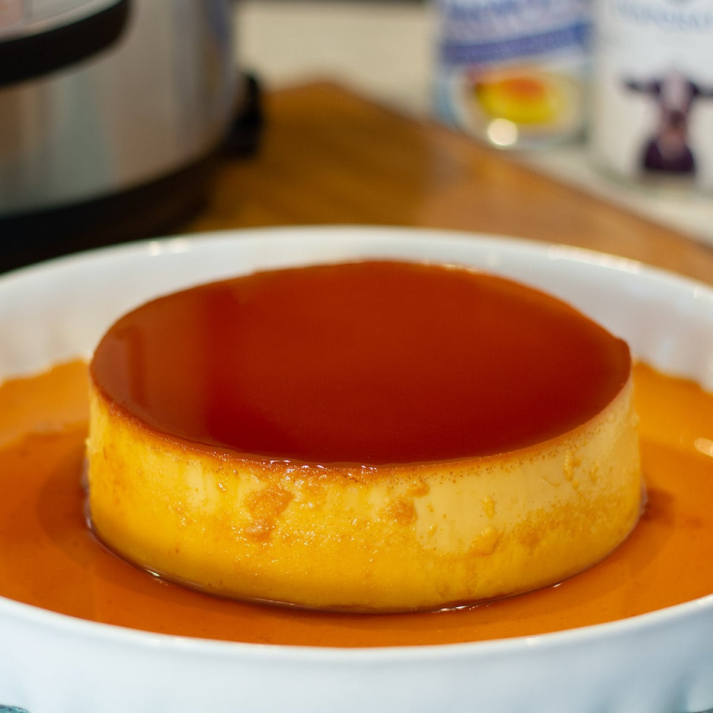

What is Leche Flan?
Leche Flan is known as the filipino version of a creme caramel. It is a sweet, rich custard desert made from egg yolks, sugar, and condensed milk. Follow this recipe to make your very own leche flan at home!
Ingredients
In order to make leche flan, you will need:
- 10 eggs
- 14 oz condensed milk
- 1 cup fresh milk
- 1 cup granulated sugar
- 1 tsp vanilla extract
Steps
- Using all the eggs, separate the yolk from the egg white (only egg yolks will be used).
- Place the egg yolks in a big bowl then beat them using a fork or an egg beater
- Add the condensed milk and mix thoroughly
- Pour-in the fresh milk and Vanilla. Mix well
- Put the mold (llanera) on top of the stove and heat using low fire
- Put-in the granulated sugar on the mold and mix thoroughly until the solid sugar turns into liquid (caramel) having a light brown color.
- Spread the caramel (liquid sugar) evenly on the flat side of the mold
- Wait for 5 minutes then pour the egg yolk and milk mixture on the mold
- Cover the top of the mold using an Aluminum foil
- Steam the mold with egg and milk mixture for 30 to 35 minutes.
- After steaming, let the temperature cool down then refrigerate
- Serve for dessert. Share and Enjoy!
Return to top
Return to recipe page